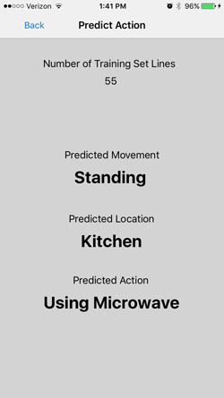

Combining DataIn smartphones the accelerometer and gyroscope allow you to capture the acceleration relative to the x-axis, y-axis, and z-axis as well as the angle of rotation around each axis. You can create training sets where you train the phone to identify motions such as sitting, walking, or laying down while the user has their smartphone in their pocket and record the movement data for comparison later. In a smarthome environment you can collect data from motion sensors in each room to identify which room is being occupied. Energy use data from appliances can identify what the user is interacting with such as a microwave, washer, or TV. By combining the data from these two you can potentially identify a user's actions and location within a smarthome environment. For example you could predict something such as a user standing in the kitchen using the microwave. |
 |
Predicting Action
Currently the program is set up to predict motion, the phone does not actively gather data from smarthome devices. When in the predict action mode, every movement has its data compared against the training sets mentioned earlier using the k-nearest neighbor algorithm. In this case I have it finding the 3 closest matches then choosing a predicted action by looking at which action is found the most in those matches.
You can adjust the number of k-nearest neighbor matches to search as well as the frequency of motion data being saved to get more accurate results (though potentially slower response because of increased data and processing).
Potential Uses
This can be useful to monitor those that may need assistance. A caregiver could be given live data to monitor activities which in turn could help chart progress of patients, know their locations, and aid in preventing or identifying potential problems.
Future Work
By adding another smart wearable device such as a smartwatch you could gather even more data relating to someones health or actions. You would have data from arm motions as well as their heart rate. There's also a potential for using this to track children and their activities, though for practical use a different design of wearable technology may be needed since it is uncommon for infants and young children to have smartphones or smartwatches.
Video - Predicting Movement